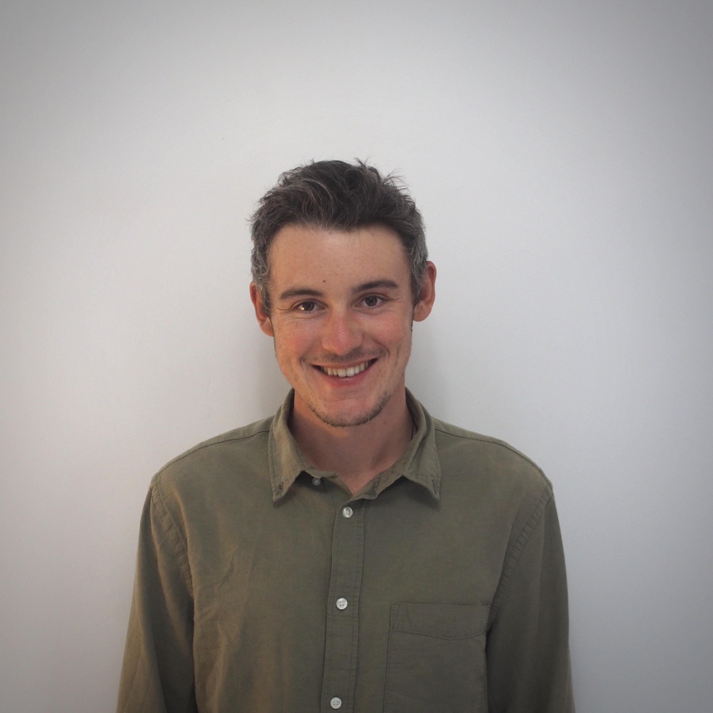

03.09.1995 · Rosenheim · Germany
Software Developer · AI Engineer
German (native) · English (fluent) · Spanish (basic)
AI Engineer and Software Developer with 5+ years of experience specializing in reinforcement learning applications for industrial optimization problems. Proven track record of developing innovative solutions for complex engineering challenges. Combining technical expertise with entrepreneurial experience to bridge the gap between AI research and practical industrial applications.